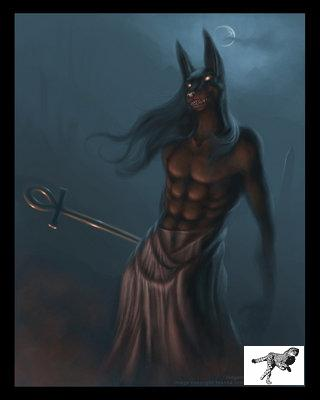

Forums galactiques > Assemblée Galactique : diplomatie officielle > The White
Pages : 1
| White Respect diplomatique : 18  15/11 ETU 09:45 | Score : 8 Détails Sur la planète Halfvolle un jeune couple décida d’avoir un enfant. Cette journée la il faisait beau, très beau et monsieur White proposa quelque chose a madame qui la surprenait mais elle l’accepta...
- Chérie que dis tu d’avoir un enfant ? - Heu...heu...oui ! Ce serait formidable ! - Que dis tu de le faire dans le jardin ? - Pourquoi c’est original^^ Monsieur White courra dans la chambre et ramena un matelas et deux paire de bouchon à oreilles. Il installa le matelas sur la pelouse et quand il mit les bouchons madame White l’interpella... - Que fais tu avec des bouchons à oreilles ? - C’est pour éviter d’entendre mon ou ton X-Com^^ - Ah ! D’accord passe en moi une pair s’il te plait ! Une fois les bouchons mis monsieur et madame White fit l’amour dans le jardin. Le jardin était plus une sorte de champ car ils habitaient en campagne. Avec leurs bouchons ils n’entendaient plus un bruit. Ce jour la (oui aussi ce jour la^^) il y avait un chasseur armé de son fusil a tirs ioniques. Il vit un oiseau et lui tira dessus. Il toucha la tète de l’oiseau. Du sang tombait du ciel mais les jeunes White était occupés. Du sang était tombé dans le vag** de madame mais aucun des deux futur parents s’en étaient souciés... Une semaine plus tard madame alla à la Galactique-Pharma pour y prendre un teste de grossesse. Il était positif et madame était bien une femme qui allait devenir une maman... Quelques mois plus tard c’est l’accouchement. Cet accouchement c’était très bien passé. Et il y avait un beau bébé. Sauf qu’il y avait une nouvelle qui allait bouleverser la famille. La mère a décédée le lendemain de l’accouchement. Monsieur White était très triste. Mais c’est quand il emmena son fils à la clinique que tout bascula... - Monsieur White, j’ai une nouvelle importante à vous dire. - Qu’elle est cette nouvelle ? - Les muscle de vôtre enfant n’ont pas étés détectés par la machine mais ils sont bien réels. Nous avons cherchés de longues heures et nous avons trouvé le problème. Vôtre enfant n’a pas des muscles rouge comme tout le monde mais des muscles blancs, comme les oiseaux. Ces muscles sont 17 fois plus développés que les muscles rouges. - Mais est ce que ça va jouer sur sa santé ? - Heureusement, non ! Monsieur White et bébé White rentrèrent a la maison. Quand White junior eu atteint les 4 ans il pouvait porter son père sans problème et son père pouvait le porter aussi. Quand il eu atteint les 16 ans la il y avait un gros problème, ne sentant pas sa force, White cassa les porte de la maison et les portière du tout nouveau CLA de luxe... Mais quand il eu les 18 ans sont père mourra à son tour, mais il avait été assassiné par des mercenaire payés. White se forma une armé pour partir a la recherche de celui qui avait payé les mercenaires... | ||
| White Respect diplomatique : 18 16/11 ETU 14:25 | Score : 4 Détails White était en guerre contre les mercenaires. Il avait pus en savoir plus sur eux dont leur nom. Ils s’appelaient « Les Mercenaires Du Chao » …
- Commandant White ! La moitié de nôtre modeste flotte a été décimé et nous avons reçu un communiqué comme quoi nous allons recevoir des bombes ! - Gardez la cadence sergent ! Nous pouvons tenir encore combien de temps ? - Nous pouvons encore tenir quelques heures. - Comment ça quelques heures ? soyez plus précis non d’une mer** ! - Il nous reste environ 3 heures monsieur ! - QUOI ??? QUE TROIS HEURES ?????? - Oui monsieur c’est bien cela. - Combien nous reste t-il de ressources sergent ? - Nous n’avons plus d’énergie ni de métaux, et c’est sans parlé des diamants. Nous n’avons plus rien pour construire des vaisseaux. - Alors allons en acheter sergent ! Qu’est ce que vous attendez ? - Le problème et que nos caisse sont vident. Nous n’avons plus un leem. - Ca c’est embêtant parce-que si il y a plus de leems je ne pourrais plus vous payer^^ Si vous voulez être payés il faut bien trouver des leems ! - C’est vrais que c’est embêtant tout ça ! - Laissez sergent je vais m’en occupé ! Pour l’instant essayé de résister le plus longtemps possible, l’ennemi est dur à abattre ! White alla se diriger vers la radio fixe du CLA amiral 4 quand une bombe arriva sur le vaisseau qui éclata. La radio était toujours en état de marche mais le commandant White était dans un piteux état. Il rampa jusqu’à la radio et il appuya sur le bouton… biiiiiiiiiip…biiiiiip…début de la teletransmission… Cher commandantes et commandants… Je suis dans un pétrin que seul vous pouvez régler . Je ne suis pas très diplomate et je n’est pas beaucoup de temps pour vous lancer mon appel au secoure. Je vais donc être direct. J’ai besoin de vaisseaux pour me défendre, de toutes ressources pour survivre, de mecanoïdes pour espionner mes plus grand ennemis afin de ne pas gâcher beaucoup de vaisseaux. La radio devrait bientôt coup… biiiiiip…biiiiiip…fin de la teletransmission…biiiiiip…..bip….bip… |
Pages : 1
Forums galactiques > Assemblée Galactique : diplomatie officielle > The White